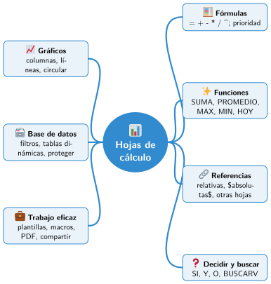

Bloque III · Datos: hojas de cálculo y bases de datos
UD05 Hojas de cálculo
RA3Elabora documentos y plantillas manejando opciones de la hoja de cálculo tipo.
Sesiones
- Sesión 5.1 La hoja de cálculo: datos, formatos y operaciones
- Sesión 5.2 Funciones básicas y fechas
- Sesión 5.3 Organizar los datos: ordenar, series, filas y hojas
- Sesión 5.4 Referencias relativas, absolutas y entre hojas
- Sesión 5.5 Formato condicional y funciones para contar
- Sesión 5.6 Decidir con la función SI
- Sesión 5.7 Buscar datos con BUSCARV
- Sesión 5.8 Gráficos
- Sesión 5.9 La hoja como base de datos
- Sesión 5.10 Plantillas, macros y trabajo en equipo
Al terminar la unidad
Mapa mental de la unidad

✏️ Repasa la unidad con el mapa: tapa una rama y explica en voz alta lo que pone.